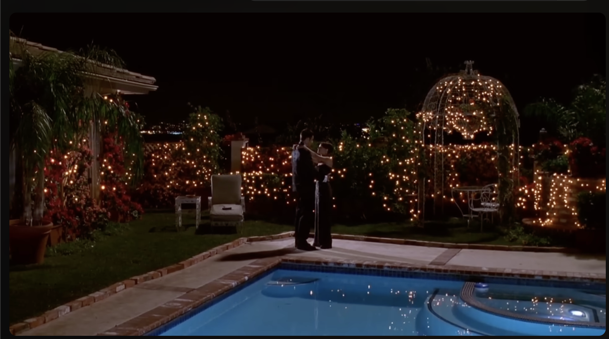

Talk to a teacher about why they continue to be a teacher
02/06/26
Help out with an home improvement project with someone
Learn how to do an analog hobby (e.g. knitting, building legos, etc.)
Watch a behind the scenes of 1 film
Read a non-fiction book (not a biography
Ask a family member about their selected careers and why they do it
Watch a 20 minute Ted talk that was not assigned to you for school
Conduct an interview with someone 18 or older who made the decision not to go to college
Sit down screen-free with a notebook for 35 minutes and write down what comes to mind
Research equity and equality opportunties for leadership in varying professions.
Watch a movie from the 90s. or 2000s
02/06/26
Do not go on social media for 2 weeks.
Go to a museum
Read a biography
Watch a documentary or docu-series
Ask an adult about how they met their "soul mate"
Listen to 1 podcast series (not watch)
Research the premise of creating a specific video game
Listen to a song with lyrics and do a rhetorical analysis
Make a journal of new vocabulary words you're learning-
Research the mascot names of 4 sports teams in different regions of our country
Have a conversation with 1-2 other people about what they define as success.
Ask a family member about their selected careers and why they do it
Learn how to play a board game or card game with friends or family
Watch a video on how something is made.
Watch a movie from the 90s. or 2000s
Completed: December 27, 2025

Reflection: Attending a local community meeting changed how I view civic participation...
Argumentative Prompt: Does local civic engagement have a stronger impact than national political discourse?
Thesis: Local civic engagement creates more tangible and meaningful change than national political discourse because it directly affects communities, increases accountability, strengthens relationships, and encourages sustained involvement.
Evidence:
- City council budget decisions
- School board curriculum changes
- Local volunteer organizations
- Community-led environmental initiatives